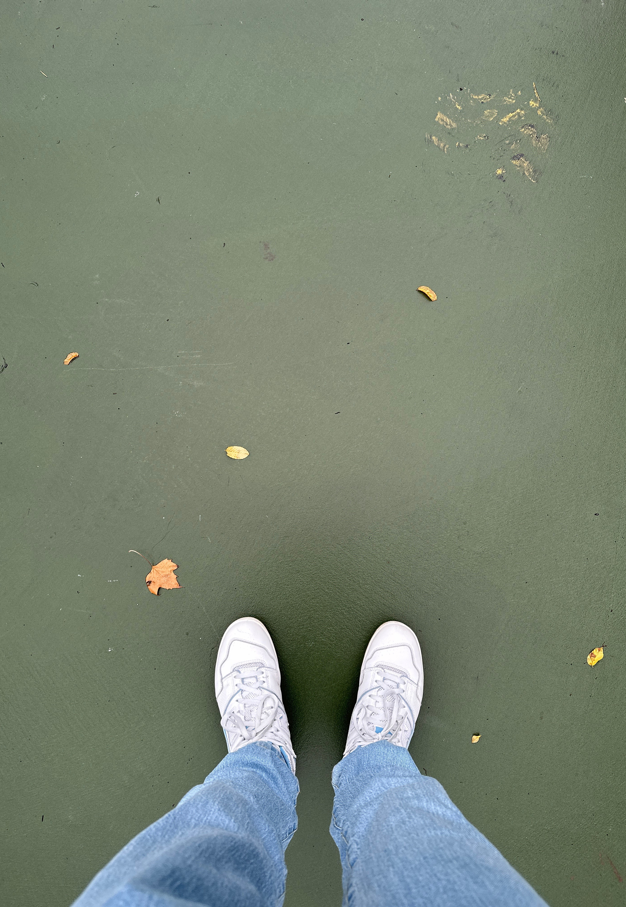

The color scheme I went for is a pretty complementary one. The main colors are baby blue and a couple of shades of orange that go together very well, as they are opposite each other on the color wheel. They are joined by a couple neutral greyish greens that made up the ground. With this color scheme, i want to elicit feelings of warmth and nostalgia that go along with fall.
